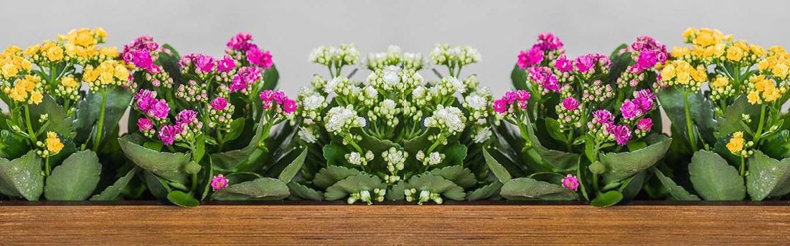
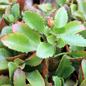
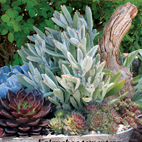
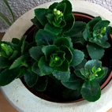

Доглядати за каланхоє неважко, адже це невибаглива рослина, яку з легкістю можна вирощувати в домашніх умовах. При правильному догляді каланхоє зацвіте яскравими квітками, що складуться у пишне суцвіття.

Яскравість світла для каланхоє
Каланхоє буде себе добре почувати в добре освітлених приміщеннях, воно досить легко переносить низьку вологість повітря. Цвітіння каланхоє блосфельда триває близько двох-трьох тижнів. Всі відцвілі квіти потрібно видалити, а рослину поставити на місяць в прохолодне приміщення і зменшити полив. Через 30 днів квітку потрібно пересадити і знову поставити в яскраве місце, полив збільшити. З весни до осені квітку потрібно поливати і не допускати пересушення земляного кому, в цей період переставте рослину на східне або на Західне вікно, а взимку переставте на південне вікно і зменшіть полив. Ознакою надмірного світла є почервонілі листя.

Полив і вологість повітря для каланхоє
Навесні і влітку поливати рослину можна прохолодною (кімнатної температури) відстояною водою. Поливайте так, щоб вода не потрапила на листки і стебла, при попаданні води на рослину може початися загнивання, або з'явиться борошниста роса. Поливати слід помірно, так щоб земляна грудка була достатньо вологою, але не мокрою, витікати вода не повинна. Краще налийте воду у піддон, через 20 хвилин вилийте зайву воду.
